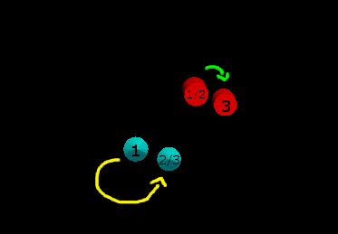

The following code shows how to insert IGT tracking data into an mitk::DataStorage and render the data with the mitk::NavigationDataObjectVisualizationFilter in an mitk::RenderWindow. The full code is shown below and can be found in MITK-Source/Modules/IGT/Tutorial/mitkIGTTutorialStep2.cpp. This tutorial is an extra target which can be build separately (see IGT Example Build Instructions).
The example we are using here regards a moving tracker and a fixed object, and after tracking a transform to move the fixed object to the tracked one is calculated and applied.
The next image describes, what happens in this example. The blue and red object are labeled with "1" at their initial position. Next, the blue object will move (approximately along the yellow arrow) to the second position, while the red one stayes fixed. Now we calculate the transform of the blue cones initial and moved position (1 -> 2) and apply this transform to shift the red object to its final position (3). Now, the relative distance and orientation of the blue and red object is as it was in the beginning.

Overlay of the three steps in this example: 1. Initial position, 2. Blue object moved along the yellow arc, 3. Final position, the red object is moved to get the initial relative position compared to the blue object.
Set up Render Window and Tracking Device
First of all, we create a new render window. For simplicity, we are not using the MITK workbench yet but run this example as a stand alone application. Hence, we need to create a render window and a data storage.
mitk::StandaloneDataStorage::Pointer dataStorage = mitk::StandaloneDataStorage::New();
mitk::RenderWindow::Pointer renderWindow = mitk::RenderWindow::New();
mitk::DataNode::Pointer dataNode = mitk::DataNode::New();
renderWindow->GetRenderer()->SetMapperID(mitk::BaseRenderer::Standard3D);
renderWindow->GetVtkRenderWindow()->SetSize(500, 500);
renderWindow->GetRenderer()->Resize(500, 500);
renderWindow->GetRenderer()->SetDataStorage(dataStorage);
Next, we need to set up the tracking device like we did in the last tutorial step IGT filter pipeline . We set additionally some boundaries for the tracking.
mitk::VirtualTrackingDevice::Pointer tracker = mitk::VirtualTrackingDevice::New();
double bound = 10.0;
mitk::ScalarType bounds[] = { -bound, bound, -bound, bound, -bound, bound };
tracker->SetBounds(bounds);
tracker->AddTool("tool1");
mitk::TrackingDeviceSource::Pointer source = mitk::TrackingDeviceSource::New();
source->SetTrackingDevice(tracker);
source->Connect();
Create Objects
Now we create a fixed and a moving object. For the moving (tracked) object, we decided for a blue cone. First, we set the name and color and add it to the data storage. Next, we need to create a visualitation filter to display it. Here, we connect in the visualization filter the output of our tracking device source to the cone representation.
mitk::Cone::Pointer cone = mitk::Cone::New();
dataNode->SetData(cone);
dataNode->SetName("My tracked object");
dataNode->SetColor(0.0, 1.0, 1.0);
dataStorage->Add(dataNode);
mitk::NavigationDataObjectVisualizationFilter::Pointer visualizer = mitk::NavigationDataObjectVisualizationFilter::New();
visualizer->SetInput(0, source->GetOutput());
visualizer->SetRepresentationObject(0, cone.GetPointer());
The fixed object is created accordingly, with a cylindrical shape and red color. As it is not tracked, we define an initial position and orientation, set it to the cylinder object and also store it as fixedNavigationData for later usage. As the object is not continuously updated, we don't need a visualization filter.
mitk::DataNode::Pointer cylinderNode = mitk::DataNode::New();
mitk::Cylinder::Pointer cylinder = mitk::Cylinder::New();
cylinderNode->SetData(cylinder);
cylinderNode->SetName("My fixed object");
cylinderNode->SetColor(1.0, 0.0, 0.0);
dataStorage->Add(cylinderNode);
mitk::Matrix3D rotationMatrix;
rotationMatrix.SetIdentity();
double alpha = 0.3;
rotationMatrix[1][1] = cos(alpha);
rotationMatrix[1][2] = -sin(alpha);
rotationMatrix[2][1] = sin(alpha);
rotationMatrix[2][2] = cos(alpha);
mitk::Vector3D offset;
offset.Fill(5.0);
mitk::AffineTransform3D::Pointer affineTransform3D = mitk::AffineTransform3D::New();
affineTransform3D->SetOffset(offset);
affineTransform3D->SetMatrix(rotationMatrix);
mitk::NavigationData::Pointer fixedNavigationData = mitk::NavigationData::New(affineTransform3D);
cylinder->GetGeometry()->SetIndexToWorldTransform(fixedNavigationData->GetAffineTransform3D());
The Tracking loop
Before we start tracking, we need to initialize the rendering manager.
auto timeGeometry = dataStorage->ComputeBoundingGeometry3D(dataStorage->GetAll());
mitk::BaseGeometry::Pointer geometry = timeGeometry->GetGeometryForTimeStep(0);
geometry->SetBounds(bounds);
mitk::RenderingManager::GetInstance()->InitializeViews(geometry);
source->StartTracking();
We now move the tracked blue cone object for 75 steps, update the rendering and print the position to the output console.
for (int i = 0; i < 75; ++i)
{
visualizer->Update();
renderWindow->GetVtkRenderWindow()->Render();
mitk::RenderingManager::GetInstance()->RequestUpdateAll();
MITK_INFO << "Position " << source->GetOutput()->GetPosition();
itksys::SystemTools::Delay(100);
}
source->StopTracking();
source->Disconnect();
Final Transform
Finally, we apply the new position of the tracked object (source->GetOutput) to the stored fixedNavigationData transform and update the rendering one last time.
fixedNavigationData->Compose(source->GetOutput(), false);
cylinder->GetGeometry()->SetIndexToWorldTransform(fixedNavigationData->GetAffineTransform3D());
renderWindow->GetVtkRenderWindow()->Render();
mitk::RenderingManager::GetInstance()->RequestUpdateAll();
itksys::SystemTools::Delay(2000);
The red cylinder is now moved accodring to the tracked transform.
Return to the [IGT Tutorial Overview]
 1.12.0
1.12.0